2 Digital Filtering
I. Continuous to discrete mappings and interfaces¶
1. Algebraic transformations¶
Linear approximation¶
Recall that the mapping between \(s\) and \(z\) planes is
For small \(T\), can approximate this as
a linear approximation yields \(z=1+s T\) or
$$ s=\frac{z-1}{T} $$ s We can replace every occurrence of \(s\) in a continuous time system by \((z-1) / T\), e.g.,
Quadratic approximation¶
Replacing every \(s\) by a quadratic expression in \(z\) would lead to an explosion in the number of poles / zeros. Simple designs in the \(s\) domain would lead to higher order designs in the \(z\) domain.
Common algebraic transformations¶
Cost of algebraic transformation: some distortion between the frequency response of the continuous-time system and the frequency response of the digital system.
- Euler's method or Forward difference
- Backward difference
- Bilinear (Tustin's) transformation
- Motivation of Tustin transformation: We can invert the expression \(s=\frac{2}{T} \frac{z-1}{z+1}, s(z+1)=\frac{2}{T}(z-1)\), and hence
-
- For small \(T\), we use the binomial theorem to write
this coincides with the quadratic expansion of \(e^{s T}\)
Each of these transformations corresponds to a certain mapping between \(s\)-plane and \(z\)-plane
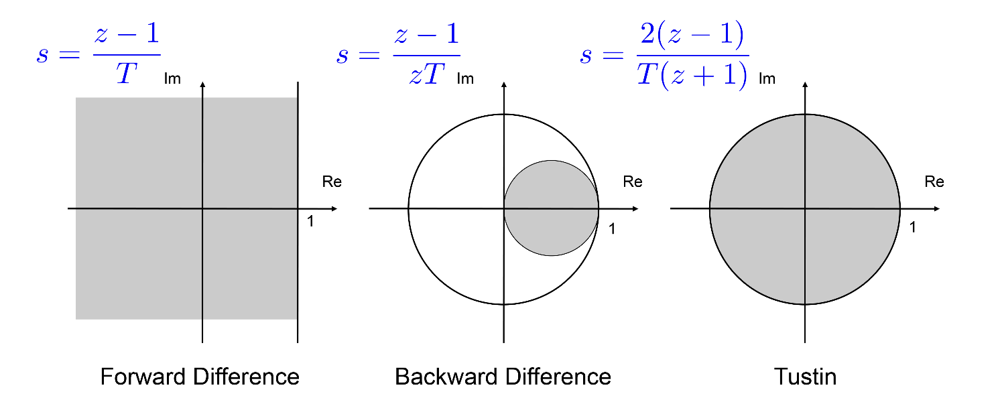
Backward difference and Tustin transformation applied to stable continuous systems result in stable discrete time systems -- not necessarily true for Euler's method!
Tustin transformation: stability is preserved (all the left plane poles get mapped into the unit disk)
Solve for \(z: ~ z=\psi^{-1}(s)=\frac{1+s}{1-s}\) For \(s=\lambda+j \omega:\)
If \(\lambda=0\) then
If \(\lambda<0\) then \((1+\lambda)^2<(1-\lambda)^2\) thus
Frequency warping of Tustin transformation¶
Analog prototype filter: \(G_c(s)\). Frequency response \(G_c(j \omega)\). Digital filter: \(G(z)=G_c(\psi(z))\). The normalised frequency response of the digital filter \((|\theta| \leq \pi)\) is given by
where
This is known as the frequency warping $$ \boxed{G\left(e^{j \theta}\right)=G_c(j \tan (\theta / 2)) \quad} $$
Inverse relation: the frequency response of the analog filter at \(\omega\) is mapped into the frequency response of the digital filter at \(\theta=2 \arctan (\omega)\).
Note that the unit of the normalised frequency is cycles / sample The normalised frequency of a given critical frequency \(f_c\) sampled with frequency \(f_s\) is $$ \theta = 2\pi\frac{f_c}{f_s} $$
2. Response matching¶
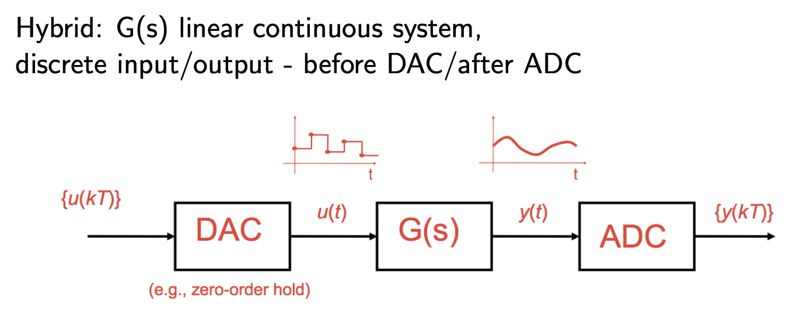
Goal: find the transfer function \(G(z)\) from \(\left\{u_k\right\}_{k \geq 0}\) to \(\left\{y_k\right\}_{k \geq 0}\) Approach: take an appropriate input, find the output, take the ratio of the \(z\) transform
Impulse invariance¶
\(G_c(s)\) is the Laplace transform continuous-time filter. The impulse response of the corresponding impulse invariance digital filter \(G(z)\) (with sampling \(T\)) is equal to the impulse response of the \(G_c(s)\) sampled at \(t=k T\).
- For bandlimited filters the digital filter frequency response will closely approximate the continuous-time frequency response.
- Preserves stability:
Example:
This works well when a Laplace transfer function is known, but not to measure a response: no D / A converter will convert \(\delta_k\) to \(\delta(t)\).
Step invariance¶
Take a continuous time filter/system with Laplace transfer function \(G_c(s)\). The corresponding step response invariance digital filter (with sampling period \(T\)) is a digital filter whose step response is equal to the step response of the continuous time filter sampled at \(t=k T\). 1. Find the step response of the continuous system 2. Sample at time \(t=k T\) and take the \(z\)-transform 3. Multiply by \((z-1) / z\).
Ramp invariance¶
Take a continuous time filter/system with Laplace transfer function \(G_c(s)\). The corresponding ramp response invariance digital filter (with sampling period \(T\) ) is a digital filter whose ramp response is equal to the ramp response of the continuous time filter sampled at \(t=k T\).
Note: any waveform invariance can be considered. The digital filter will preserve the properties of the continuous filter response to that particular waveform.
Choosing the waveform¶
- Depends on the properties of the conversion of analog to digital
- Choose a response to an analog signal that will be converted to its digital equivalent by the ADC
- For example, a digital ramp through a "sample and hold" DAC becomes a staircase function not analog ramp \(\rightarrow\) step invariant response more suited
II. Digital filtering¶
1. Desired frequency responses¶
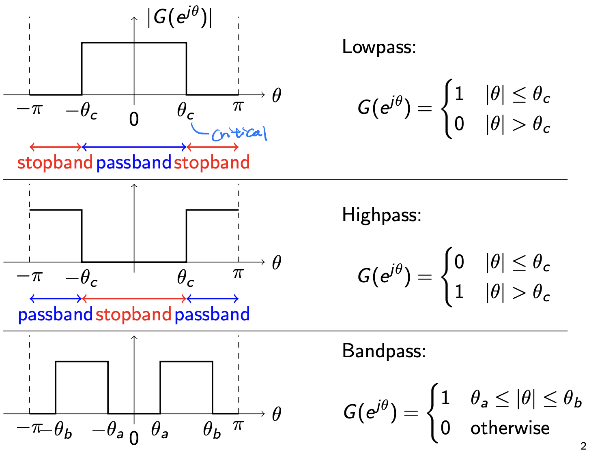
2. Ideal lowpass delta response¶
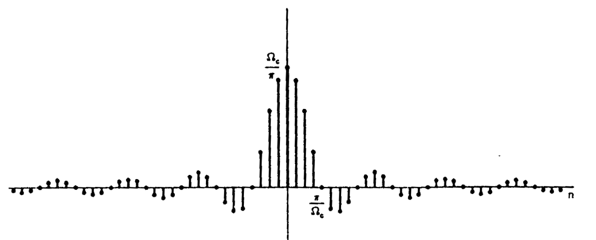
- This response is non-causal as \(g_k \neq 0 \text{ for } k < 0\) (two-sided)
- Not realisable as a real-time linear system since it is infinite
3. Realisable filter specs¶
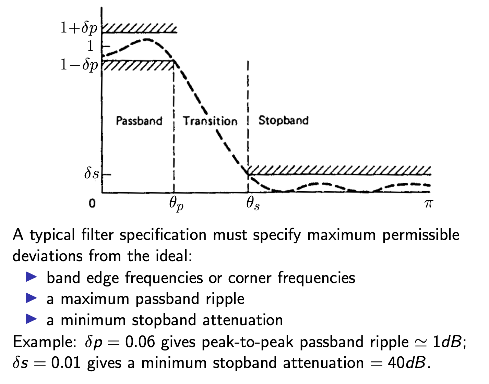
4. FIR vs IIR filters¶
FIR¶
- FIR filters are simple
- Feed-forward or non-recursive
- Realised efficiently in hardware (FFT)
- Inherently stable: \(G(z)=\frac{\sum_{k=0}^N g_k z^{N-k}}{z^N}\), all poles in 0
IIR¶
- Feedback: the output goes back to the filter
- Finite polynomial representation but infinite impulse response
- Typically meet a given set of specifications with a much lower filter order than FIR filters
| FIR Filters | IIR Filters |
|---|---|
| Simple, stable, feedforward, fast implementation (FFT) | Can be unstable, use feedback |
| Can have exactly linear phase | Design methods: Direct optimisation of the transfer function or Generation of a digital filter from an analogue implementation of analog filters |
| Design methods are generally linear | |
| Higher filter order than IIR | Lower filter order than FIR |
| Often greater delay than for an equal performance IIR filter | Shorter delay than for an equal performance FIR filter |
5. IIR design¶
General method¶
Use the continuous to discrete mappings in the previous section. 1. translate the filter specs on \(\theta\) (where appropriate) to analog specs in \(\omega\) 2. design an analog filter (we will see a few techniques) 3. either use algebraic transforms (forward difference, backward difference or Tustin transform) to obtain a discrete-time filter or use response matching (e.g. impulse invariant mapping) 4. check design obtained, adjust if necessary, verify stability
Note: response matching may be better suited for FIR design
Classical analog prototypes¶
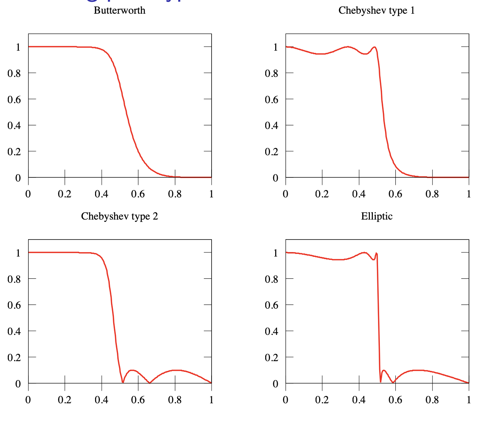
Butterworth filter¶
\(N\) th-order lowpass, \(G_c(s)\) satisfies
- Unit DC gain, \(G_c(j 0)=1\).
- -3 dB cutoff frequency at \(s=j \omega_c\).
- \(G_c(s) G_c(-s)\) poles satisfies
- If \(p_i\) is a root of \(G_c(s)\) then \(-p_i\) is a root of \(G_c(-s)\). Thus the poles of \(G_c(s)\) are those roots lying in the left half plane (stability), so that
Band transformations¶
Prototypes are typically lowpass. Standard transformation can be used to convert a lowpass prototype into other types.
Assuming a lowpass prototype with cutoff at 1 :
- Lowpass to Lowpass: set \(s=\frac{\bar{s}}{\omega_c}\) to change the cutoff frequency to \(\omega_c\).
- Lowpass to Highpass: set \(s=\frac{\omega_c}{\bar{s}}\) to get highpass with cutoff frequency at \(\omega_c\).
- Lowpass to Bandpass: set \(s=\frac{\bar{s}^2+\omega_l \omega_u}{\bar{s}\left(\omega_\mu-\omega_l\right)}\) to get bandpass with lower cutoff at \(\omega_l\) and upper cutoff at \(\omega_u\).
- Lowpass to Bandstop: set \(s=\frac{\bar{s}\left(\omega_u-\omega_l\right)}{\bar{s}^2+\omega_{\mid} \omega_u}\) to get bandstop with lower cutoff at \(\omega_l\) and upper cutoff at \(\omega_u\).
6. FIR filter design¶
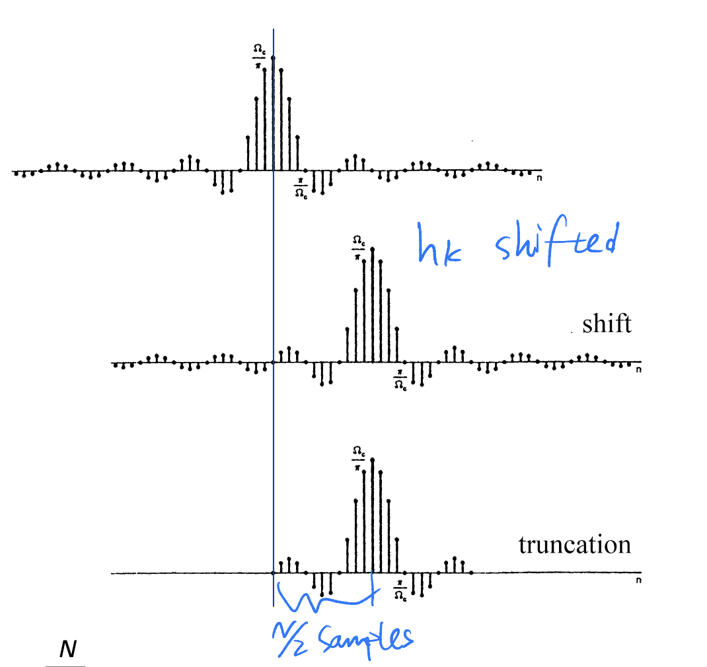
- \(h_k\) is non-causal impulse response of the ideal filter
- New filter G derived by
- Shift
- Truncation at \(N + 1\) samples of the ideal response \(\rightarrow\) Causality recovered!
Truncated ideal filters¶
- Larger \(N\) \(\rightarrow\) smaller samples discarded \(\rightarrow\) reduced distortion
- but longer filters are computationally more expensive and have larger delay
The DTFT's reverse convolution property¶
For DTFT: $$ w_n=u_n v_n \longrightarrow W(\theta)=\frac{1}{2 \pi} \int_{-\pi}^\pi U(\varphi) V(\theta-\varphi) d \varphi $$
The DTFT has 2 convolution properties (from \(k\) to \(\theta\)) 1. discrete convolution \(\longrightarrow\) multiplication 2. multiplication \(\longrightarrow\) periodic convolution
Truncation¶
Shifted desired impulse response
Truncated unit sample response
Truncation \(=\) multiplication by a rectangular window
Using the reverse convolution property of the DTFT:
DTFT of the rectangular window¶
if \(N\) reasonably large, \(\theta \frac{N+1}{2} \gg \theta / 2\) so the denominator is \(\sin (\theta / 2) \approx \theta / 2\) and hence
This is approximately a sinc function.
The effect of truncation¶
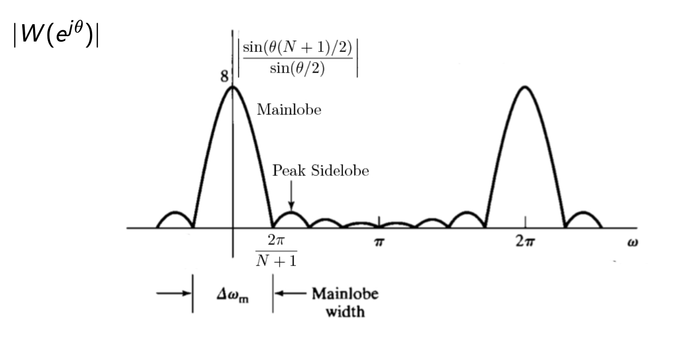
- Transition band is related to main lobe. It reduces as \(N \rightarrow \infty\).
- Ripples of \(G\) are related to the area under sidelobes, which remains constant as \(N\) increases -- improved by redesigning the window function
Windows¶
Rectangular
Bartlett (triangular)
Hanning
Hamming
Window plots¶
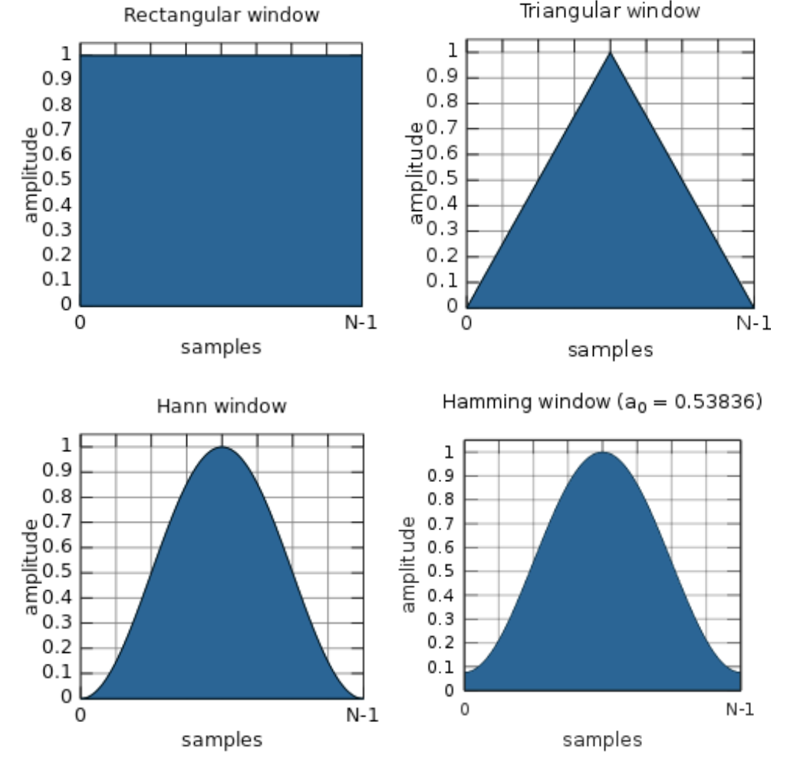
Window characteristics¶
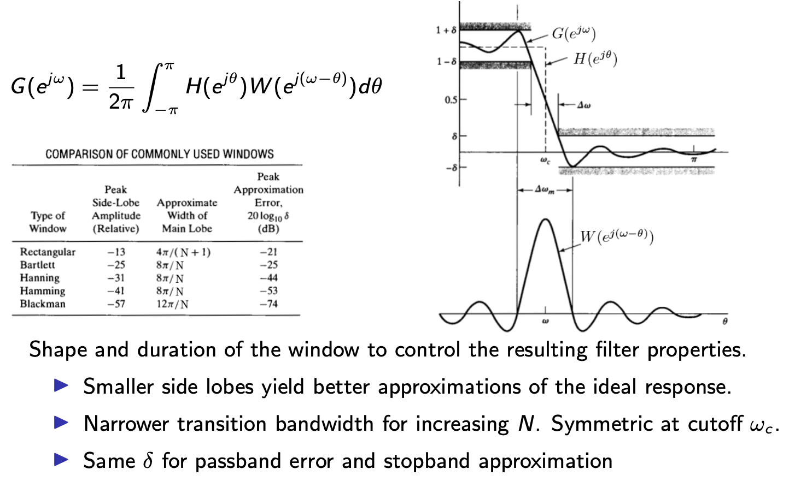
Window method¶
- Design filters to approximate a given target response
- Does not explicitly impose amplitude response constraints, e.g. passband ripples or stopband attenuation Steps:
- Select a suitable window function \(w_k\).
- Specify an ideal frequency response \(H\).
- Compute the coefficients of the ideal filter \(h_k\).
- Multiply the ideal coefficients by the window function to give the filter coefficients and delay to make causal.
- Evaluate the frequency response of the resulting filter and iterate 1-5 if necessary. For detailed working example see lecture notes 9.
Multi-band FIR design¶
Design highpass, bandpass,. . . \(\longrightarrow\) Composition of lowpass filters The ideal bandpass filter
where
Ideal impulse response by linearity and antitransform:
Final filter by delay and multiplication with desired window \(w_k\) :
Linear phase filter¶
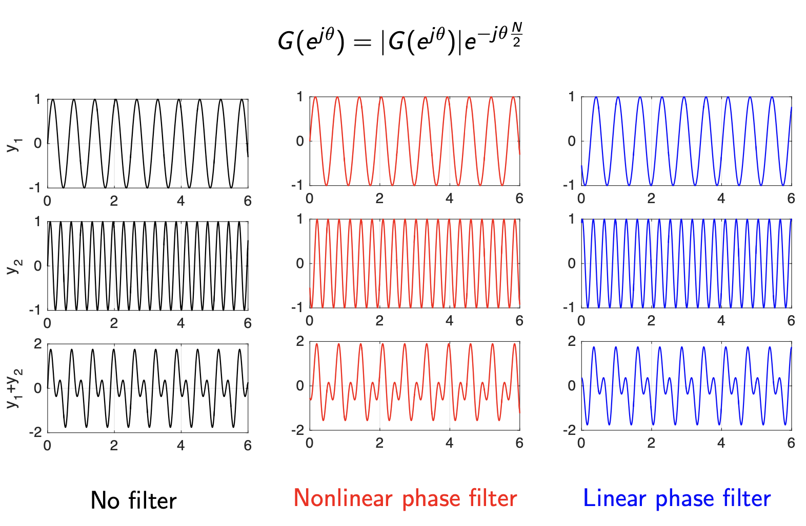
Linear phase \(G\left(e^{j \theta}\right)=\left|G\left(e^{j \theta}\right)\right| e^{-j \theta \frac{N}{2}}\) is achieved if \(\mathbf{g}_{\mathbf{k}}=\mathbf{g}_{N-\mathbf{k}}\).
Note: window method gives linear phase filters. The coefficients \(w_k\) of all window functions satisfies \(w_k=w_{N-k}\). If the desired impulse response \(h_k\) is also symmetric \(h_k=h_{N-k}\) then \(g_k=h_k w_k\) is symmetric, that is, the resulting filter has linear phase.